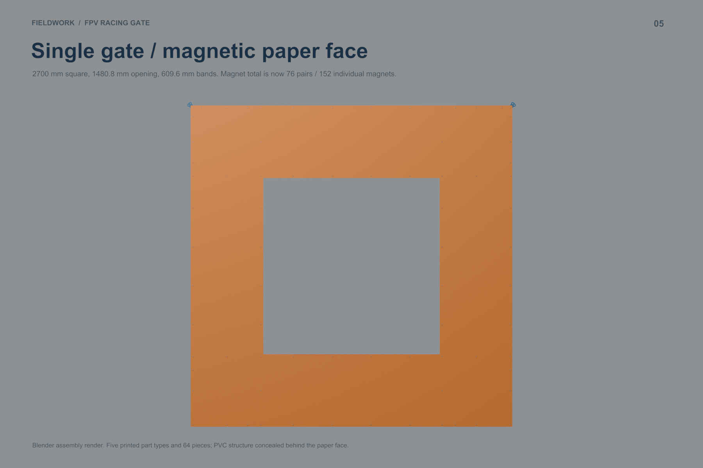
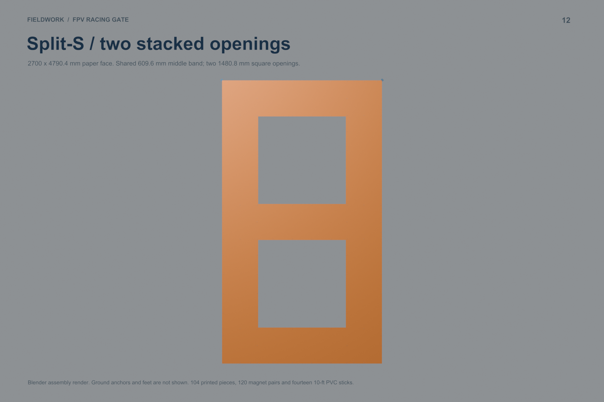
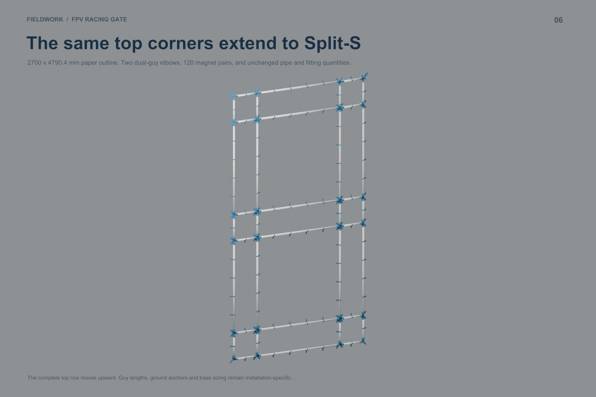
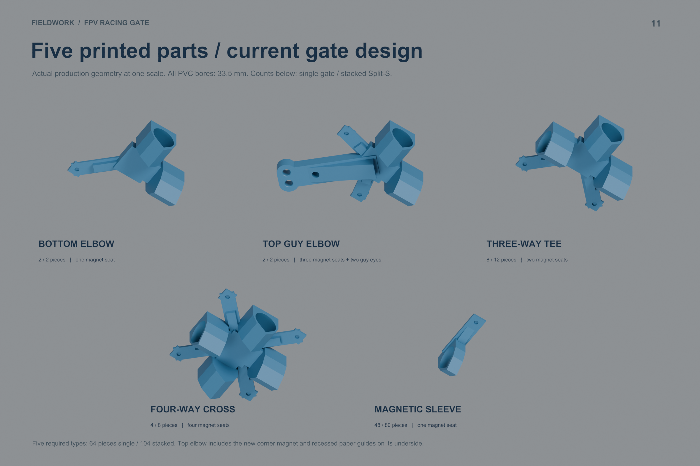
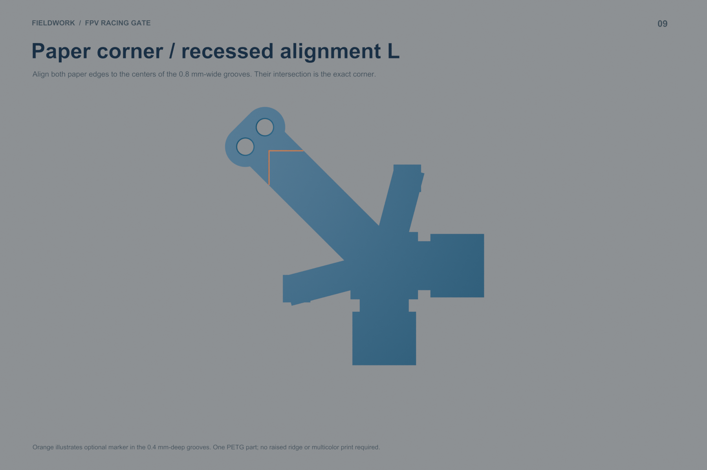
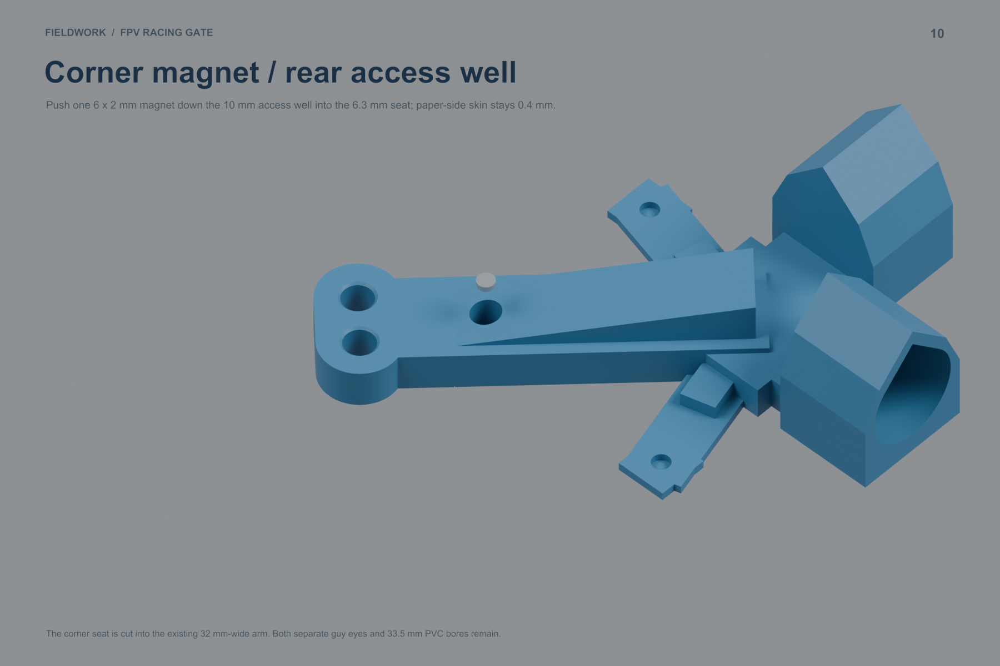
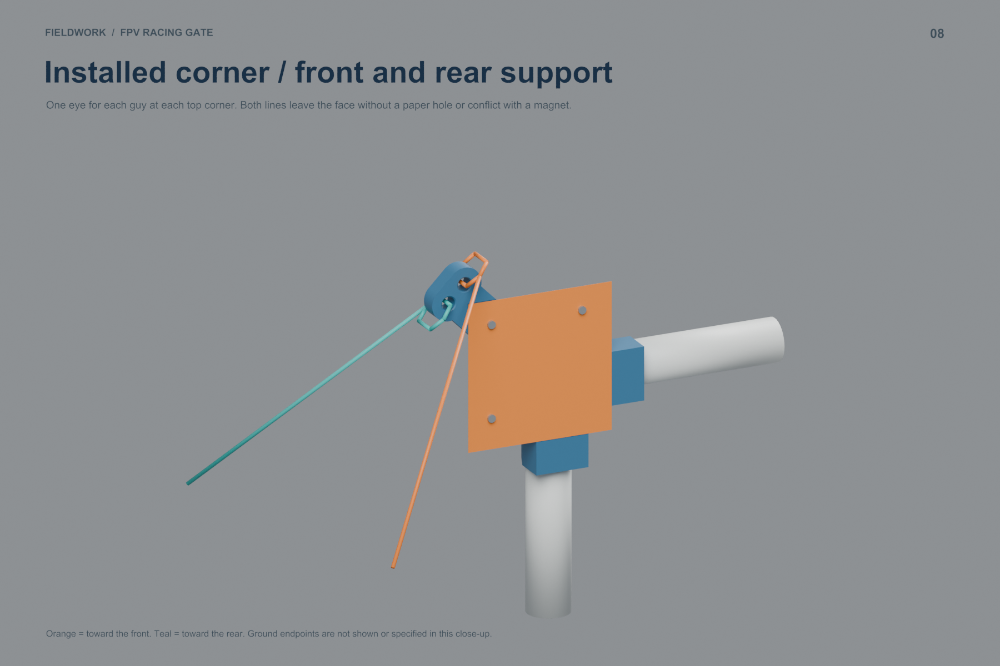
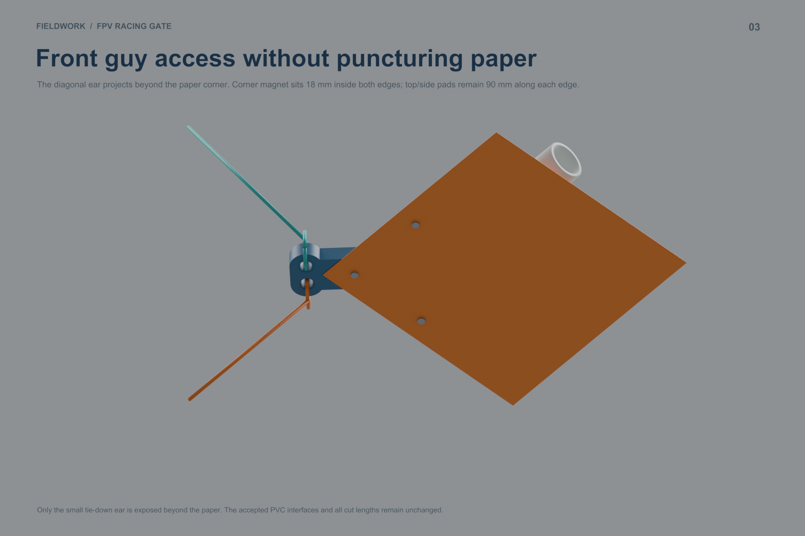
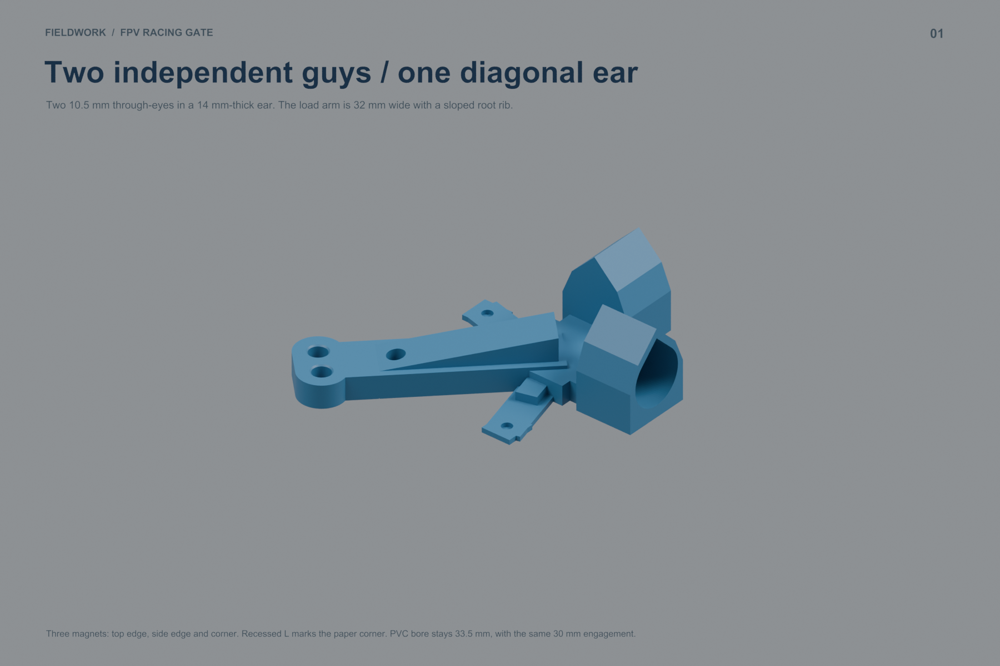
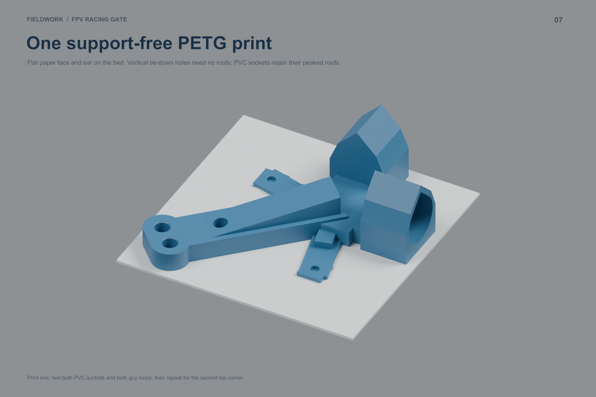

Original designs: CC BY-NC-SA 4.0 · License scope and commercial permissions
A third magnet 18 mm inside both edges, plus a recessed L marking the exact paper corner. Both guy eyes and the accepted 33.5 mm PVC bores remain.
Blender · Assembly PDF · Full guide · Kit
Align paper edges to the centers of the 0.8 mm-wide, 0.4 mm-deep grooves. Install the corner magnet from the rear access well; its 0.4 mm plastic skin remains intact.










single: Printed BOM · Print Queue · PVC Cuts · Magnet Positions · Paper Cuts
split_s: Printed BOM · Print Queue · PVC Cuts · Magnet Positions · Paper Cuts
Geometry probes · Print and assembly checks
Physical guide visibility, socket fit and guy loads require a first-print check.